<!DOCTYPE html>
<html lang="en">
    <head>
        <meta charset="utf-8" />
        <meta name="viewport" content="width=device-width, initial-scale=1" />
        <meta name="theme-color" content="#000000" />
        <title>Bask Bikes</title>
        <link rel="icon" href="assets/favicon.ico" />
        <link rel="stylesheet" href="global.css" />
        <link rel="stylesheet" href="style.css" />
        <script defer src="main.js"></script>
    </head>
</html>
<body>
    <header id="header" class="max-w-container">
        <div class="max-w justify-between">
            <a href="/">
                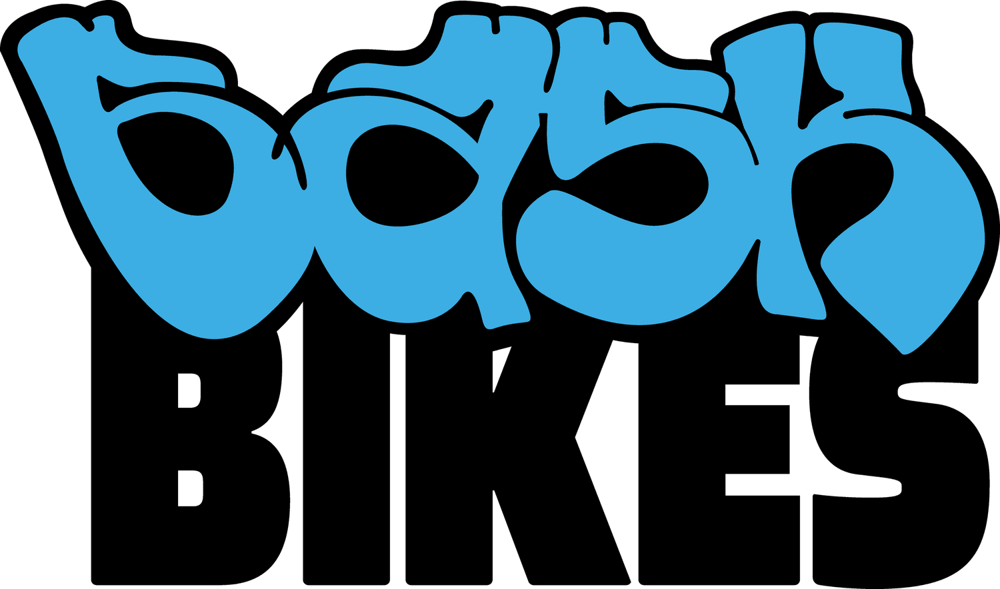
            </a>
            <nav class="flex align-center">
                <a href="">Carbon Repair</a>
                <a href="">Custom Paint</a>
            </nav>
        </div>
    </header>
    <section class="landing-images">
        <picture>
            <source media="(width <= 600px)" srcset="assets/s5-mobile.jpg" />
            <source media="(width > 600px)" srcset="assets/s5.jpg" />
            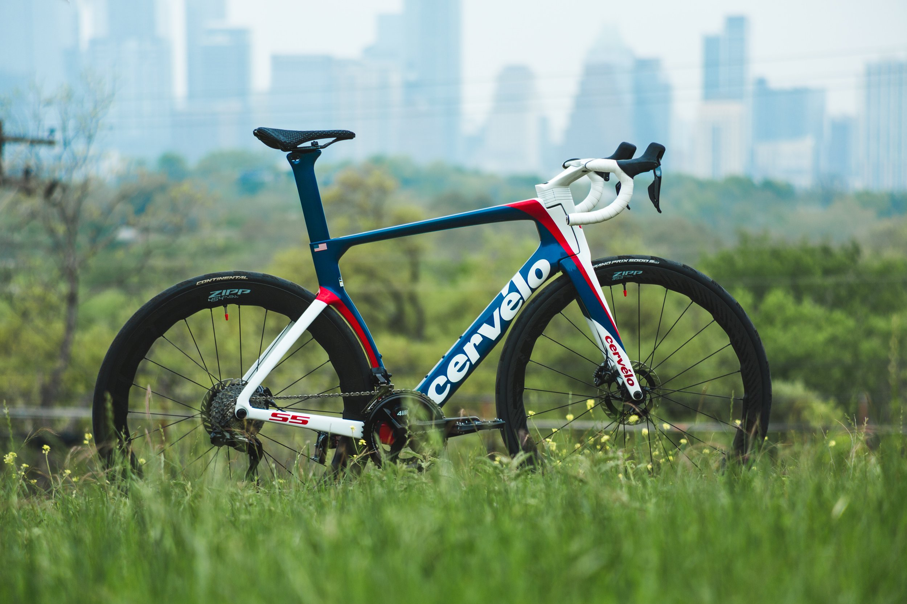
        </picture>
        <div class="landing-grid flex">
            <div class="half">
                
                
            </div>
            <div class="half">
                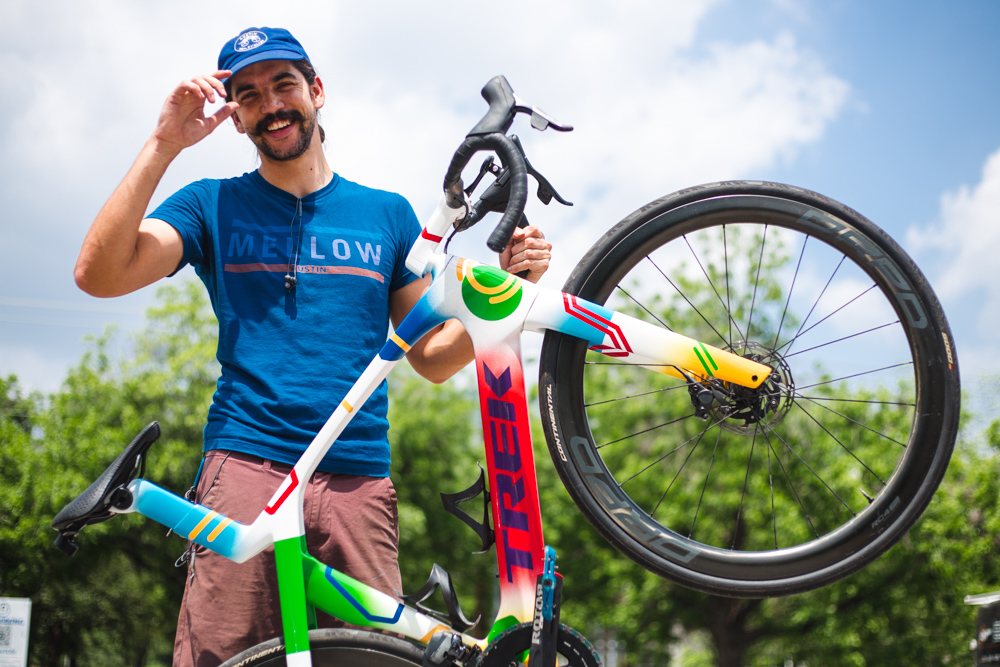
                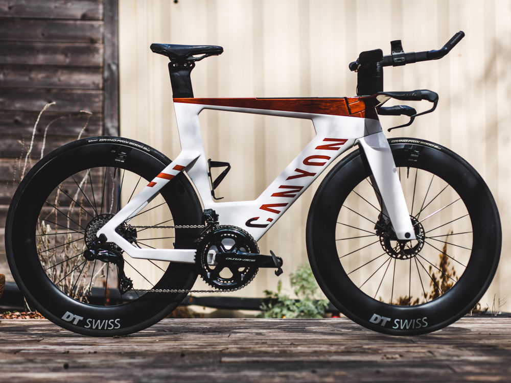
            </div>
        </div>
    </section>
    <section class="services max-w-container">
        <div class="max-w column">
            <div class="image-showcase w-100 flex">
                <div class="carbon half flex column">
                    <h2>Services</h2>
                    <div class="mobile-unhide mobile-description">
                        <h3>Carbon Repair</h3>
                        <p>$200 - $600 for most repairs</p>
                        <p>I will repair most damage to carbon frames and blend it into the original paint. Contact me with photos for an estimate. I provide a 2-3 week turn around depending on the job but it can take 2 - 8 weeks for me to be able to take it into the shop. Rush turn around is available.</p>
                    </div>
                    <div class="image-grid h-100">
                        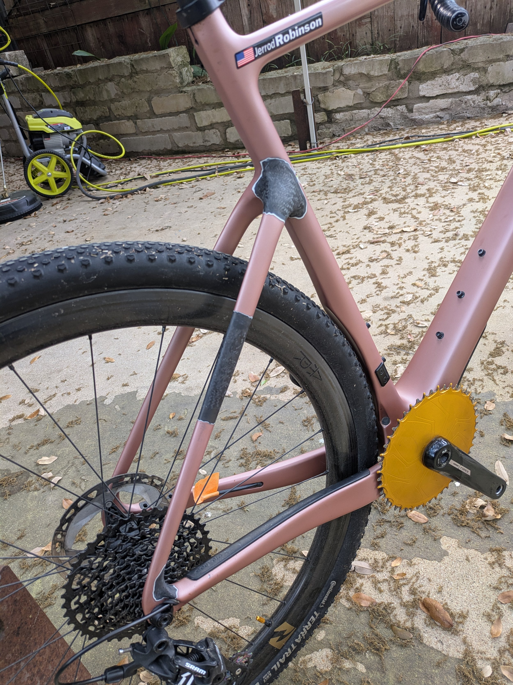
                        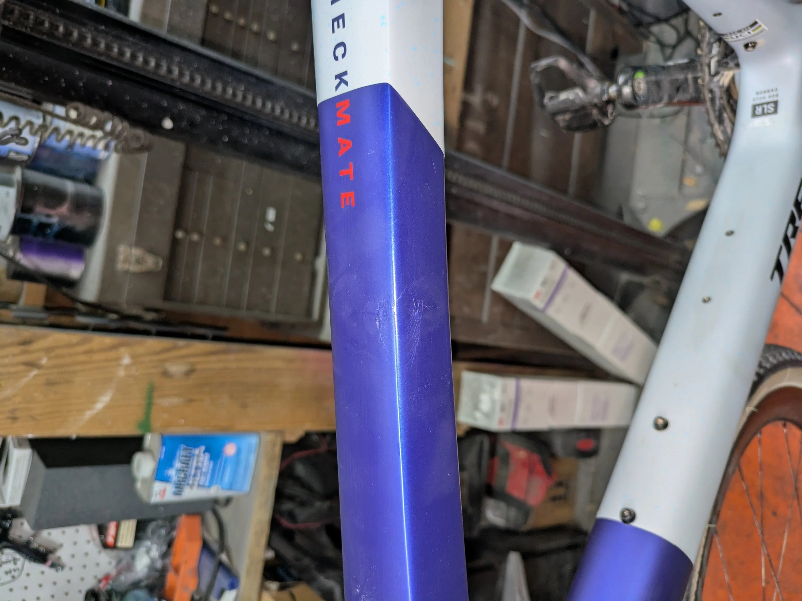
                        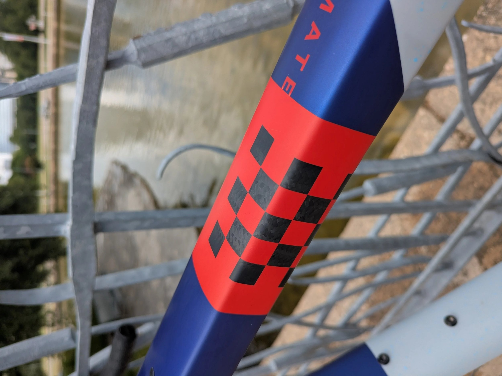
                        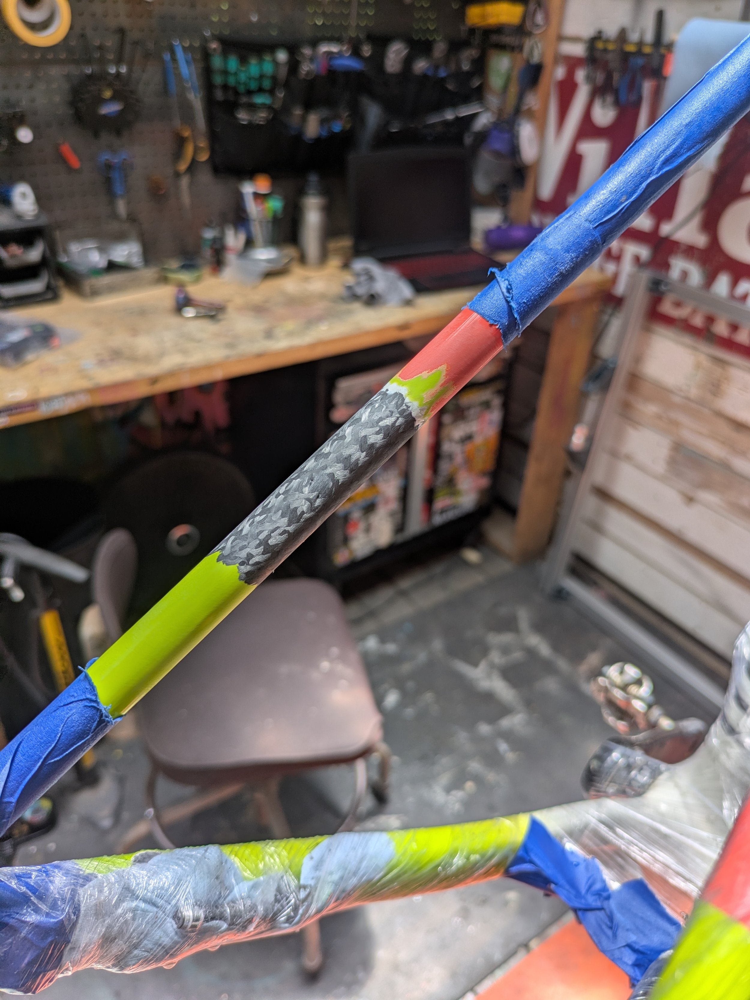
                        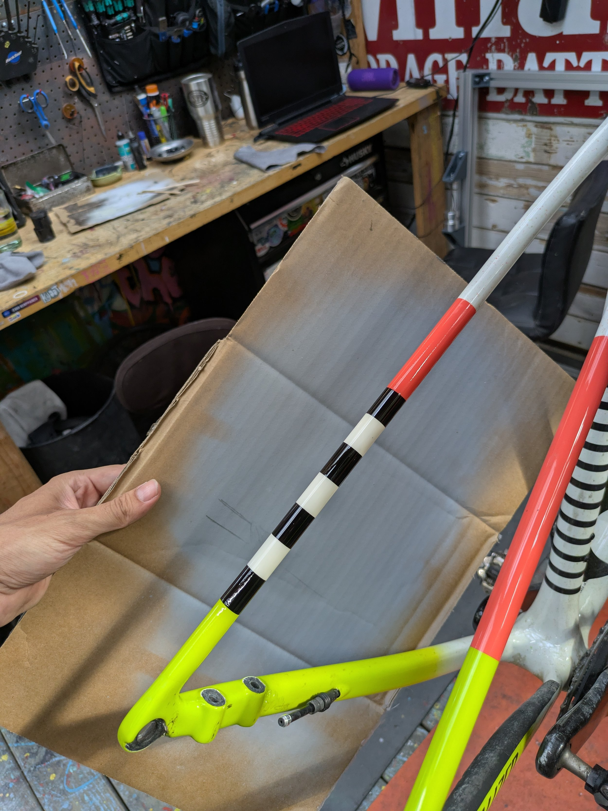
                        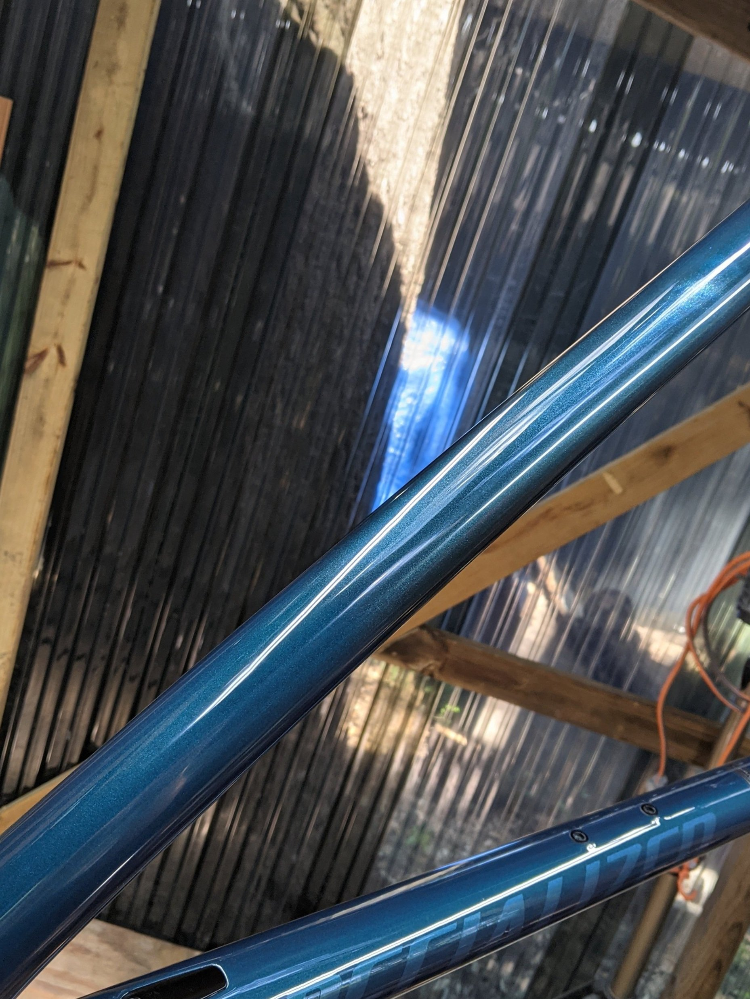
                    </div>
                </div>
                <div class="paint half">
                    <div class="mobile-unhide mobile-description">
                        <h3>Custom Paint</h3>
                        <p>I am willing to paint anything that can fit through a standard sized doorway.</p>
                        <p>Sleek classics to hydro dipping, airbrushing, and traditional hand painted artwork from my partner Sabrina <a href="https://www.instagram.com/thrimbychardo/" target="_blank">@thrimbychardo.</a></p>
                        <p>Contact me for a quote and to start the design process.</p>
                    </div>
                    <div class="image-grid h-100">
                        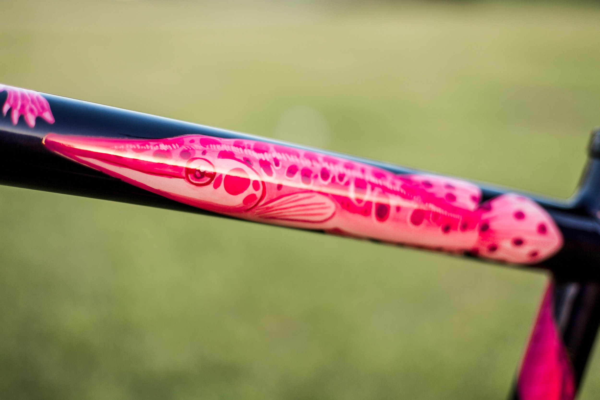
                        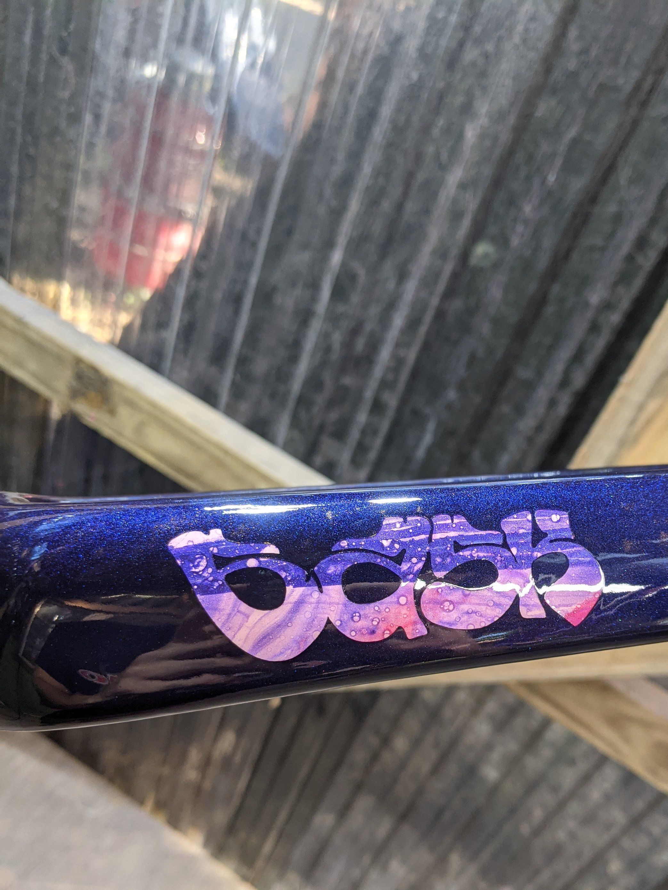
                        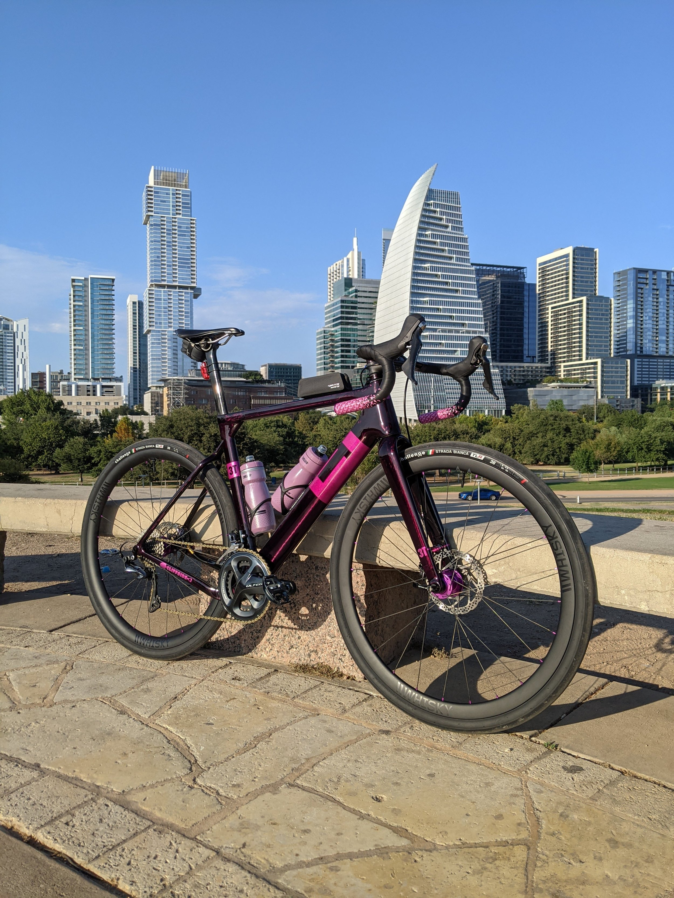
                        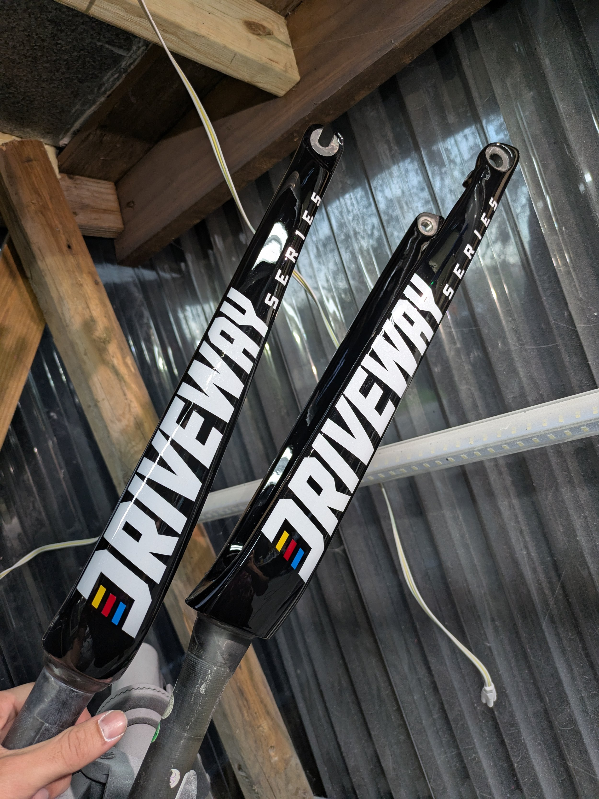
                    </div>
                </div>
                <div class="mobile-unhide mobile-description">
                    <h3>Refinishing and Decals</h3>
                    <p>I can do all types of custom work!</p>
                    <p>I make decals, anodize titanium, one off custom parts, restore old paint jobs with touch ups and new clear coat.</p>
                    <p>One of my favorites is decals to cover up existing logos on a frame for a cheaper non permanent way to change the accent color of your bike.</p>
                </div>
            </div>
            <div class="mobile-hide description-container flex">
                <div class="third">
                    <h3>Carbon Repair</h3>
                    <p>$200 - $600 for most repairs</p>
                    <p>I will repair most damage to carbon frames and blend it into the original paint. Contact me with photos for an estimate. I provide a 2-3 week turn around depending on the job but it can take 2 - 8 weeks for me to be able to take it into the shop. Rush turn around is available.</p>
                </div>
                <div class="third">
                    <h3>Custom Paint</h3>
                    <p>I am willing to paint anything that can fit through a standard sized doorway.</p>
                    <p>Sleek classics to hydro dipping, airbrushing, and traditional hand painted artwork from my partner Sabrina <a href="https://www.instagram.com/thrimbychardo/" target="_blank">@thrimbychardo.</a></p>
                    <p>Contact me for a quote and to start the design process.</p>
                </div>
                <div class="third">
                    <h3>Refinishing and Decals</h3>
                    <p>I can do all types of custom work!</p>
                    <p>I make decals, anodize titanium, one off custom parts, restore old paint jobs with touch ups and new clear coat.</p>
                    <p>One of my favorites is decals to cover up existing logos on a frame for a cheaper non permanent way to change the accent color of your bike.</p>
                </div>
            </div>
            <div class="misc-info">
                <p class="top-right">YOU CAN FIND MORE INFORMATION AND PORTFOLIO IN THE TABS ON THE TOP RIGHT</p>
                <p>Preferred vendor for:
                    <a href="http://www.austintricyclist.com/">Austin Tricyclist</a>,
                    <a href="https://austinbikefarm.com/">Austin Bike Farm</a>,
                    <a href="https://dogspeedcycles.com/">Dog Speed Cycles</a>,
                    <a href="https://themeteor.cafe/bike">The Meteor (Austin)</a>
                </p>
                <p>And I have worked with
                    <a href="https://www.specialized.com/us/en/store-finder/specialized-austin-south-warehouse/6405484">Specialized Austin</a>
                </p>
            </div>
        </div>
    </section>
    <section class="about max-w-container">
        <div class="max-w">
            <div class="image half">
                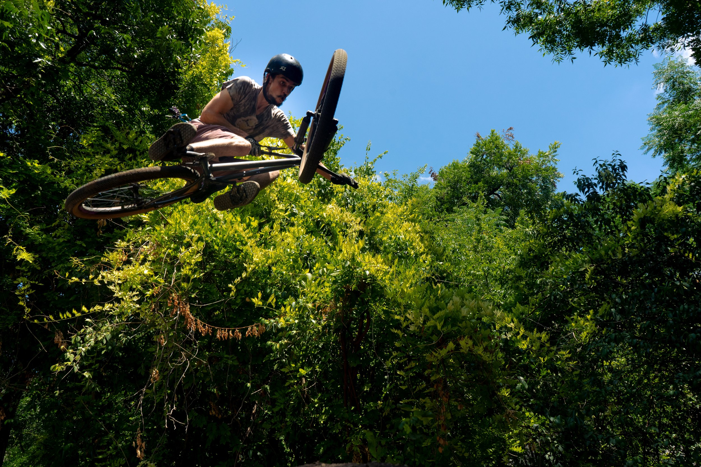
            </div>
            <div class="text half flex column justify-center align-center">
                <h2>About Bask</h2>
                <p>My name is John Wiley, I am an extremely avid cyclist from BMX, Dirt jumping, MTB all the way to road. I have been biking my whole life and working in the bike industry for 10 years. I am a top level mechanic with extensive knowledge from full suspension to a specialty in TT bikes. I am a general expert in all things bikes and very passionate about what I do. If I can’t answer your question I can certainly figure out how to.</p>
            </div>
        </div>
    </section>
</body>
